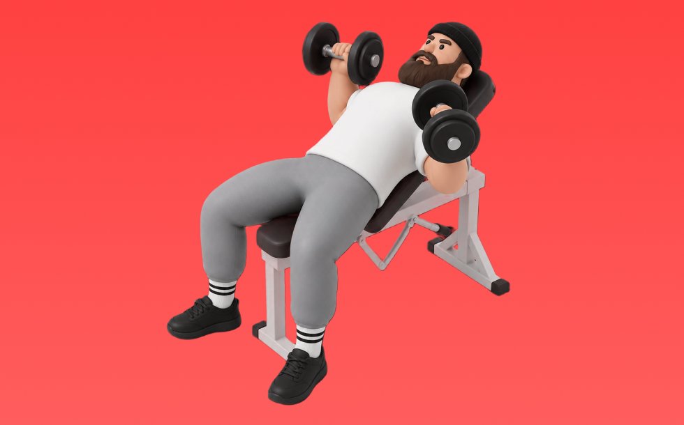

Incline Dumbbell Press

Use dumbbells to press. Lower to the chest and press up. Targets upper pecs, front delts, and triceps; easy to fix left–right imbalances. Build chest size and pressing strength.
- Primary Muscle Group
- Chest
- Detailed Muscles
- Pectorals / Front delts / Triceps
- Equipment
- Dumbbell
- Also Known As
- インクラインDBプレス / incline db press
YouTube Videos
-
How to do the INCLINE DUMBBELL BENCH PRESS! | 2 Minute Tutorial
-
Grow Your Chest with the INCINE DUMBBELL PRESS | Mind Pump
-
How To Do Incline Dumbbell Press Correctly
-
Incline Dumbbell Press BETTER | Targeting The Muscle Series
-
How To PROPERLY Dumbbell Incline Press Like A Pro | 3 Common Mistakes
-
How To: Dumbbell Incline Press | 3 GOLDEN RULES (MADE BETTER!)
-
How To: Dumbbell Incline Chest Press
-
Dumbbell Bench Press (BETTER CHEST ACTIVATION!)
-
Stop Doing Dumbbell Presses Like This! (7 KEY MISTAKES)
-
Incline Dumbbell Bench Press Form & Tutorial Guide
-
STOP Doing Dumbbell Press Like This (5 Mistakes Slowing Your Chest Gains)
-
INCLINE CHEST PRESS | Exercise Form Guide
YouTube Shorts
-
The PERFECT Incline Dumbbell Chest Press
-
Incline DB Bench 🔥 BEST Guide Ever Made
-
How to do a Dumbbell Incline Chest Press!
-
How To Do a Proper Incline Dumbbell Press
-
Dumbbell Incline Chest Press
-
Key tips for a strong and safe dumbbell incline press
-
How to Perform Incline Dumbbell Press | Upper Chest Exercise Tutorial
-
Most Common Mistakes: Incline Dumbbell Chest Press
-
How to Setup on Incline Dumbbell Bench Press (and not waste energy)
-
THE SECRET TO MY MASSIVE CHEST - INCLINE DUMBBELL BENCH PRESS
-
Inclined Dumbell Press | Jeet Selal
-
How to Incline Dumbbell Bench Press Correctly
-
explode your chest gains with this cue!
-
How to Incline Dumbbell Bench Press to Maximize Upper Chest Growth
-
Dumbell Chest Press Mistakes (DON'T DO THIS!)
-
Incline Dumbbell Bench Press Tutorial
-
Sam Sulek Focuses on Incline Press for Upper Chest 💪🔥 #samsulek #chestworkout
-
✅ The PERFECT Dumbbell Chest Press
-
"Incline Dumbbell Press: Are You Making These Mistakes?"
-
🚨How To Do DB Incline Press ✅
-
INCLINED DUMBBELL CHEST PRESS MISTAKES, THE PERFECT INCLINE DUMBBELL CHEST PRESS
-
Incline Chest Press Mistake (STOP DOING THIS!)
-
How to get heavy dumbbells into position for dumbbell bench press #dumbbell
-
How to do a Flat Dumbbell Chest Press!
-
How To: Seated Dumbbell Shoulder Press | Form Tutorial
-
The Perfect Incline Bench Press‼️
-
Most Common Mistakes: Incline Dumbbell Chest Press
-
Bench Angle & Muscles Worked (KNOW THE DIFFERENCE!)
-
Build a Powerful Chest: Best Dumbbell Chest Workouts for Massive Gains!
-
incline fly | Incline Bench fly dumbbell workout | chest workout | chest exercise #shorts #gym #like
-
"Incline Dumbbell Press: Stop Making These Mistakes!"#shorts #fitneess #motivation
-
Easiest Way to Set Up Incline Smith Machine Bench Press (in Less than 1 Minute)
-
HOW I SET UP for the INCLINE DUMBBELL BENCH PRESS‼️ - Schaum Fitness
-
How to PROPERLY Use The Incline Chest Press Machine At Planet Fitness (Exercise Tutorial)
-
✅ The PERFECT Incline Smith Machine Bench Press
-
Flat Vs Incline (Which Is Better?)
-
How to Properly Use the Incline Hammer Strength Press for Upper Chest
-
Incline Bench Press Mistake (STOP DOING THIS!)
How to Perform
- Set a stable position and brace your torso.
- Press with control without using momentum.
- Lower under control while keeping range of motion.
Form Tips
- Do not shrug your shoulders
- Keep wrists neutral
- Avoid excessive momentum
Pro Tips
- Prioritize form and range of motion before adding load.
- If shoulders feel uncomfortable, reduce load and range.
Rep Guide
General guidelines. Adjust based on your goal, experience, and condition.
- Strength: 1-5 reps
- Hypertrophy: 6-12 reps
- Endurance: 13-20 reps
Get the app
Log your trainingand workoutsin Biggr.Start for freeright now.